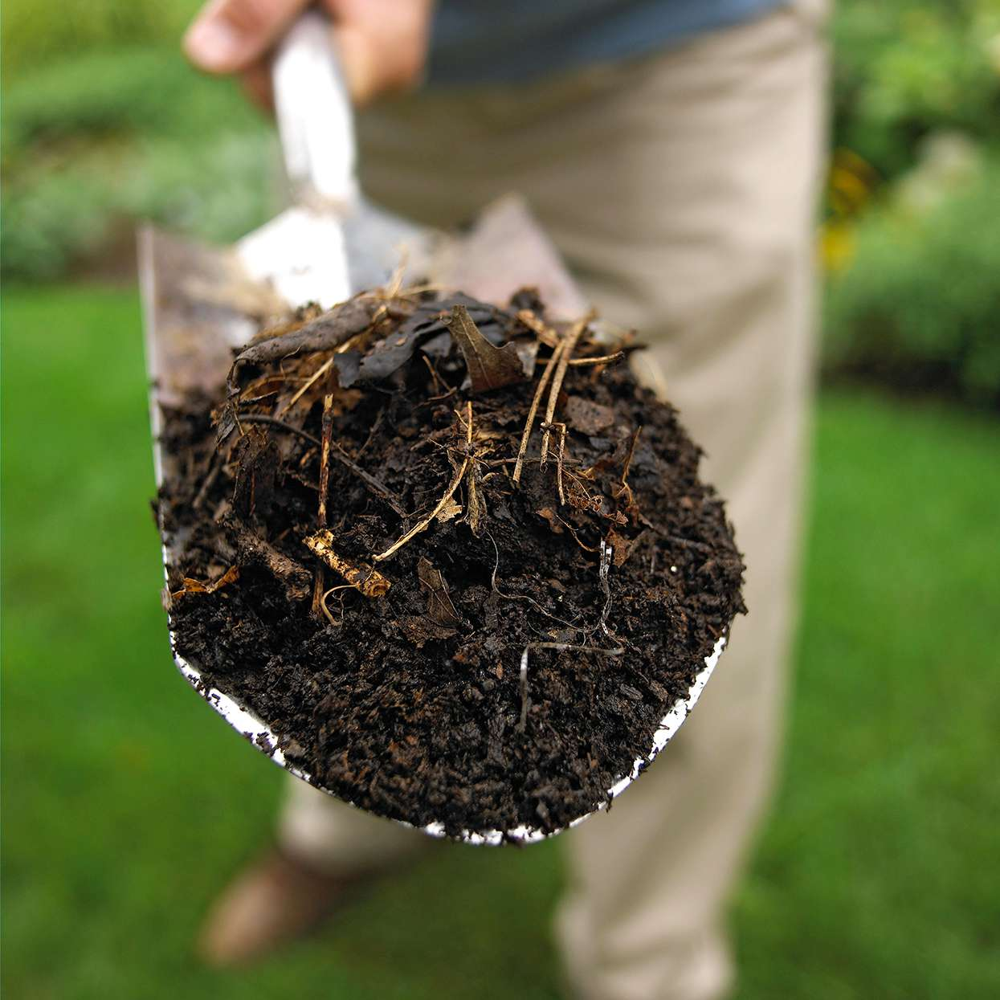

Introduction
Background and Significance of the Study
Composting is the natural process of turning organic waste, such as leaves and food scraps into a fertilizer that improves soil and plants. Organic waste we produce at home can be recycled with the help of composting. Since compost may act as substitute fertilizers, this can help cut costs. This experiment aims to know if egg shells and banana peels increase the growth rate of plants. Based on research, egg shells and banana peels help in root growth in plants helping them to grow faster and stronger.
SAKADAB mentions that they are financially unstable due to constantly relying on fluctuating sales of their beneficiaries products and services. This experiment can greatly help them not only financially but also food-wise. Egg shells and banana peels encourage root growth and increases the growth rate of plants which makes it very suitable for growing vegetables and fruits which can help lessen food expenses. Tomatoes, cabbages
Statement of the Problem and Hypothesis
A. Does composting eggshells and banana peels increase the growth rate of green onions?B. If we use the compost of eggshells and banana peels for green onions, then the growth rate is increased compared to using no compost.